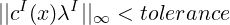
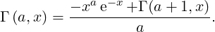
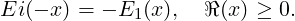

14 Special functions
The special function approximations are defined in the header pnl/pnl_specfun.h.
Most of these functions rely on the Cephes library which uses its own error mechanism which can be
activated or deactivated using the two following functions
14.1 Real Bessel functions
-
double pnl_bessel_i (double v, double x)
Description Modified Bessel function of the first kind of order v.
-
double pnl_bessel_i_scaled (double v, double x)
Description Modified Bessel function of the first kind of order v divided by e|x|.
-
double pnl_bessel_rati (double v, double x)
Description Ratio of modified Bessel functions of the first kind : Iv+1(x)∕Iv(x).
-
double pnl_bessel_j (double v, double x)
Description Bessel function of the first kind of order v.
-
double pnl_bessel_j_scaled (double v, double x)
Description Bessel function of the first kind of order v. Same function as
pnl_bessel_j.
-
double pnl_bessel_y (double v, double x)
Description Modified Bessel function of the second kind of order v.
-
double pnl_bessel_y_scaled (double v, double x)
Description Modified Bessel function of the second kind of order v. Same function as
pnl_bessel_y.
-
double pnl_bessel_k (double v, double x)
Description Bessel function of the third kind of order v.
-
double pnl_bessel_k_scaled (double v, double x)
Description Bessel function of the third kind of order v multiplied by ex.
-
dcomplex pnl_bessel_h1 (double v, double x)
Description Hankel function of the first kind of order v.
-
dcomplex pnl_bessel_h1_scaled (double v, double x)
Description Hankel function of the first kind of order v and divided by eIx.
-
dcomplex pnl_bessel_h2 (double v, double x)
Description Hankel function of the second kind of order v.
-
dcomplex pnl_bessel_h2_scaled (double v, double x)
Description Hankel function of the second kind of order v and multiplied by eIx.
14.2 Complex Bessel functions
-
dcomplex pnl_complex_bessel_i (double v, dcomplex z)
Description Complex Modified Bessel function of the first kind of order v.
-
dcomplex pnl_complex_bessel_i_scaled (double v, dcomplex z)
Description Complex Modified Bessel function of the first kind of order v divided by
e|Creal(z)|.
-
dcomplex pnl_complex_bessel_rati (double v, dcomplex x)
Description Ratio of complex modified Bessel functions of the first kind :
Iv+1(x)∕Iv(x).
-
dcomplex pnl_complex_bessel_j (double v, dcomplex z)
Description Complex Bessel function of the first kind of order v.
-
dcomplex pnl_complex_bessel_j_scaled (double v, dcomplex z)
Description Complex Bessel function of the first kind of order v divided by e|Cimag(z)|.
-
dcomplex pnl_complex_bessel_y (double v, dcomplex z)
Description Complex Modified Bessel function of the second kind of order v.
-
dcomplex pnl_complex_bessel_y_scaled (double v, dcomplex z)
Description Complex Modified Bessel function of the second kind of order v divided
by e|Cimag(z)|.
-
dcomplex pnl_complex_bessel_k (double v, dcomplex z)
Description Complex Bessel function of the third kind of order v.
-
dcomplex pnl_complex_bessel_k_scaled (double v, dcomplex z)
Description Complex Bessel function of the third kind of order v multiplied by ez.
-
dcomplex pnl_complex_bessel_h1 (double v, dcomplex z)
Description Complex Hankel function of the first kind of order v.
-
dcomplex pnl_complex_bessel_h1_scaled (double v, dcomplex z)
Description Complex Hankel function of the first kind of order v and divided by eIz.
-
dcomplex pnl_complex_bessel_h2 (double v, dcomplex z)
Description Complex Hankel function of the second kind of order v.
-
dcomplex pnl_complex_bessel_h2_scaled (double v, dcomplex z)
Description Complex Hankel function of the second kind of order v and multiplied
by eIz.
14.3 Error functions
-
double pnl_sf_erf (double x)
Description Compute the error function  ∫
0x e-t2
dt.
-
dcomplex pnl_sf_complex_erf (dcomplex z)
Description Same as pnl_sf_erf for complex arguments.
-
double pnl_sf_erfc (double x)
Description Compute the complementary error function 1. - erf(x).
-
dcomplex pnl_sf_complex_erfc (dcomplex x)
Description Same as pnl_sf_erfc for complex arguments.
-
double pnl_sf_erfcx (double x)
Description Compute the scaled complementary error function of x, defined by
ex2
erfc(x).
-
dcomplex pnl_sf_complex_erfcx (dcomplex z)
Description Same as pnl_sf_erfcx for complex arguments. Note that erfcx(-i x) =
w(x).
-
dcomplex pnl_sf_w (dcomplex z)
Description Compute e-z2
erfc(-iz).
-
double pnl_sf_w_im (double x)
Description Compute 2Dawson(x)∕
-
double pnl_sf_erfi (double x)
Description Compute -i erf(i z)
-
dcomplex pnl_sf_complex_erfi (dcomplex z)
Description Same as pnl_sf_erfi for complex arguments.
-
double pnl_sf_dawson (double x)
Description Compute  ∕2 e-x2
erfi(x).
∕2 e-x2
erfi(x).
-
dcomplex pnl_sf_complex_dawson (dcomplex z)
Description Same as pnl_sf_dawson for complex arguments.
-
double pnl_sf_log_erf (double x)
Description Compute log pnl_sf_erf(x)
-
double pnl_sf_log_erfc (double x)
Description Compute log pnl_sf_erfc(x)
14.4 Gamma functions
For x > 0, the Gamma Function is defined by
-
double pnl_sf_fact (int n)
Description Computes factorial of n Γ(n + 1).
-
double pnl_sf_gamma (double x)
Description Computes Γ(x),x ≥ 0
-
double pnl_sf_log_gamma (double x)
Description Computes log(Γ(x)),x ≥ 0
-
int pnl_sf_log_gamma_sgn (double x, double *y, int *sgn)
Description Computes y = log(|Γ(x)|) for x > 0 sgn contains the sign of Γ(x) (-1 or
+1).
-
double pnl_sf_choose (int n, int k)
Description Computes the binomial coefficient  =
=  for 0 ≤k ≤n in double
precision.
for 0 ≤k ≤n in double
precision.
14.5 Digamma function
For x > 0, the digamma function ψ is defined as the logarithmic derivative of the Gamma function
Γ
The function ψ admits the following integral representation
14.6 Incomplete Gamma functions
For a ∈ℝ and x > 0, the Incomplete Gamma Function is defined by
A relation similar to the one existing for the standard Gamma function holds
| Γ(a) | = ∫
0∞ua-1 e-u du | |
|
| P(a,x) | =  = =  ∫
0xua-1 e-u du ∫
0xua-1 e-u du | |
|
| Q(a,x) | = 1 -P(a,x) =  = ∫
x∞e-u ua-1du. | | |
-
double pnl_sf_gamma_inc (double a, double x)
Description Computes Γ(a,x), a ∈ℝ,x ≥ 0
-
void pnl_sf_gamma_inc_P (double a, double x)
Description Computes P(a,x), a > 0,x ≥ 0
-
void pnl_sf_gamma_inc_Q (double a, double x)
Description Computes Q(a,x), a > 0,x ≥ 0
14.7 Exponential integrals
For x > 0 and n ∈ℕ, the function En is defined by
This function is linked to the Incomplete Gamma function by
from which we can deduce
For n > 1, the series expansion is given by
The asymptotic behaviour is given by
The special case n = 1 gives
For any complex number x with positive real part, this can be written
By integrating the Taylor expansion of e-t ∕t, and extracting the logarithmic singularity, we can
derive the following series representation for E1(x),
The function E1 is linked to the exponential integral Ei
The above definition can be used for positive values of x, but the integral has to be
understood in terms of its Cauchy principal value, due to the singularity of the integrand at
zero.
We deduce,
For x ∈ℝ
-
double pnl_sf_expint_En (int n, double x)
Description Computes E_n(x) for n ≥ 0,x ≥ 0, or x > 0 when n = 0 or 1.
14.8 Hypergeometric functions
-
double pnl_sf_hyperg_2F1 (double a, double b, double c, double x)
Description Compute the Gauss hypergeometric function 2F1(a,b,c,x) for |x| < 1 and
for x < -1 when b,a,c,(b-a),(c-a),(c-b) are not integers
-
double pnl_sf_hyperg_1F1 (double a, double b, double x)
Description Compute the hypergeometric function 1F1(a,b,x)
-
double pnl_sf_hyperg_2F0 (double a, double b, double x)
Description Compute the hypergeometric function 2F0(a,b,x) for x<0 using the
relation 2F0(a,b,x) = (-x)-aU(a,1 + a -b,-).
-
double pnl_sf_hyperg_0F1 (double c, double x)
Description Compute the hypergeometric function 0F1(c,x)
-
double pnl_sf_hyperg_U (double a, double b, double x)
Description Compute the confluent hypergeometric function U(a,b,x) with x > 0